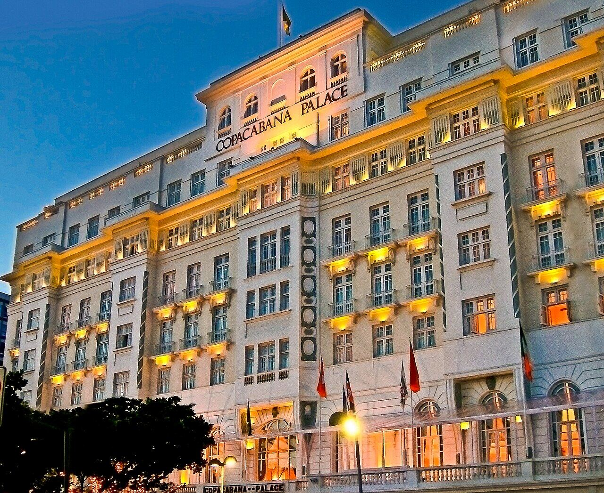
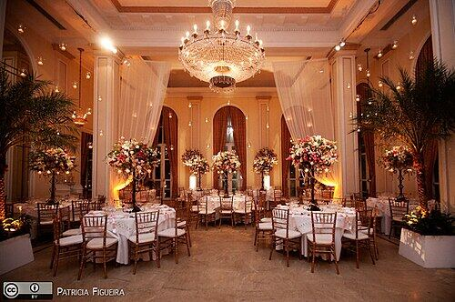
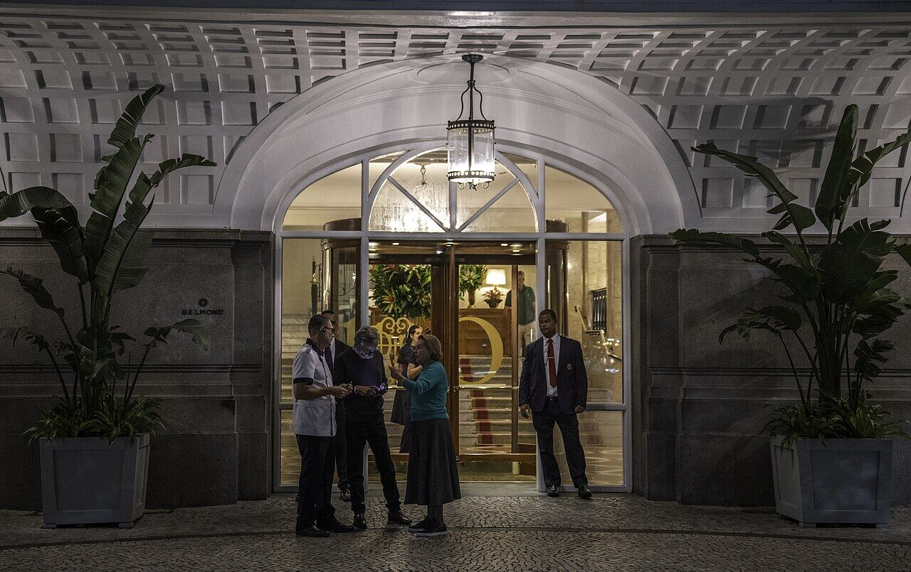

Drinque no Copacabana Palace
Copacabana
Um clássico do glamour carioca, e dá para emendar num jantar.
Nosso comentário
O bar à beira da piscina do hotel, inaugurado em 1923, é um dos cenários mais elegantes da cidade. Um drinque ali, ao som baixo de bossa nova, é a noite romântica em estado puro.
Dicas
- Vale ir mais arrumado.
- Reservem se quiserem jantar no hotel.
Combina com
Fotos do lugar


